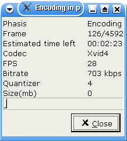

|
Mpeg to Divx tutorial 1.Getting ready This page is an example of encoding mpeg1 or 2 ( a DVD for example) into AVI, with xvid and mp3 audio.Only mpeg video (m1v and m2v) and mpeg program stream are supported by avidemux (mpg/vob). The stream must be mono angle, and not cyphered. Let's call this stream stream.mpg If your source is a dvd, a good way is to use the very reliable Mplayer like this : mplayer -dvd 1 -dumpstream. It will create a avidemux compatible vob from the DVD. VDR files are currently unsupported. Avidemux cannot read mpeg stream. Rather it can read mpeg stream index. A mpeg stream index is a plain text file describing the mpeg and where the frames are located. It is very similar to the d2v structure of DVD2AVI, a great windows frame server. It is this index that allows avidemux to random seek in the file and to be frame accurate. To build this index, you have two options :
The index and mpeg fields are obvious. For the audio track, the simplest is to press the Scan file for audio stream and wait a few seconds. The pulldown menus will be filled by detected audio streams and their features (bitrate etc...). Press Ok, and wait a few minutes, the index is being created. When done, we are ready to play with the mpeg stream. 2.Editing the video Some DVD are coded as 23.976 aka FILM (most movies actually). Some others are coded as 29.97 (NSTC), soap for example. In the first case, the DVD player does a operation to convert it on the fly to NSTC format (telecine). So the mpeg header always says 29.96 as it will always be the final format. Avidemux uses mpeg2dec to decode mpeg streams (with a little patch). Mpeg2dec does not do the telecine on FILM movie (and that's better that way). It means that avidemux cannot tell the difference between FILM and NSTC. So if the mpeg looks progressive (not interlaced) and obvious desync appears (and gets worse and worse), use Misc->Change fps and set it to 23.976. For PAL mpeg, there is no problem, it is always 25 fps. Now you should have something like this : Time to set some filters to the video. F1 to popup the filter list. 
We will select the Crop filter, to get ride of the black borders. If the stream is very clean, you can try the autoCrop button. On this example, the borders are very small. They appear in green for easy visual matching. 
Now that the image has been cropped, we will resize it so something smaller. To do a correct resizing, it is very important to take the aspect ratio into account. The aspect ratio is the shape of a pixel. On a pc it is mostly square, on DVD it could be 4:3 or 16:9. So, select the input aspect ratio (16:9 is the most common for DVD) and target aspect ration (1:1 for Divx, 4:3 or 16:9 to do a DVD or SVCD). Then select the resizing method, bilinear is generally good enough for downsizing. You probably will want to check the 16 round up to be sure the final width and height are multiples of 16. Then move the slider until you reach the desired width.
Depending on the source, you may want to add more filters (subtitling, denoiser, deinterlacer...). See video filters for more. The video is now ready, time to set up the video encoding. You can open the preview window and move inside the movie using the slidebar, the preview window will be updated. 3.Setting up the encoder Obviously we want to encode the video, so we set the video to process mode (F5). Time to select a codec. My two preferred are Xvid and Lavcodec. You can use windows based tutorial for Xvid as the options are the same. For lavcodec, have a look in mplayer documentation. Let's take Xvid for this mini tutorial.
First we will set the log file for dual pass as we may want to use it later by using Misc->Select Log File Selecting Configure codec will show this dialog. 
We will take 2pass and enter the final size.The size is the video only, you have to take the overall target size and remove the part used by the audio. 4.Setting audio If you use the audio you selected when creating the index, nothing to do. You can also use a external audio using Audio-source menu entry. If you want to let the audio as-is, for example to do a Xvid+AC3 track do nothing and skip the whole chapter. Else, set the audio to process mode and set (for example) Normalize, 48->44. To get the detail, check audio filters Same story as for video codec, select a codec, for example MP3, and configure it. We will take 128 kbps joint stereo, like here 
5.Saving Now select File->Save avi and wait a few hours. Done. Avidemux will do pass 1 then pass2 and encode the audio.  |